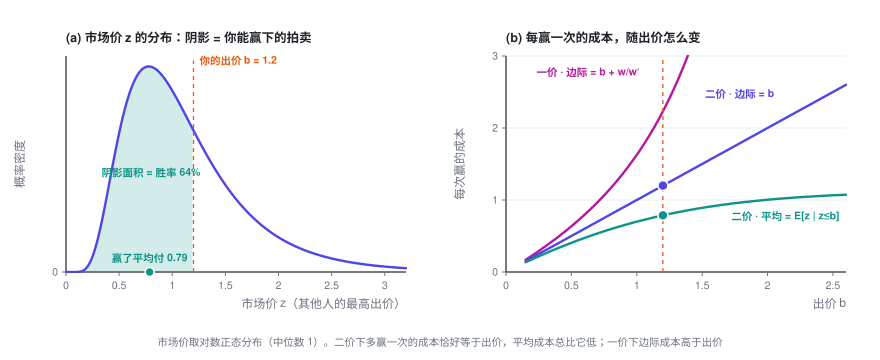
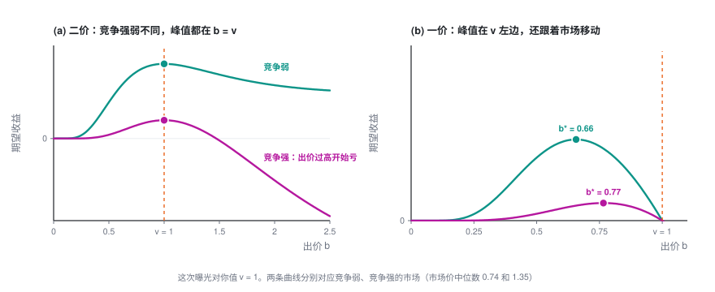
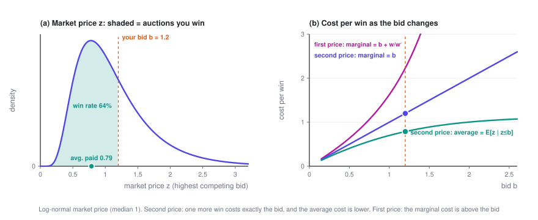
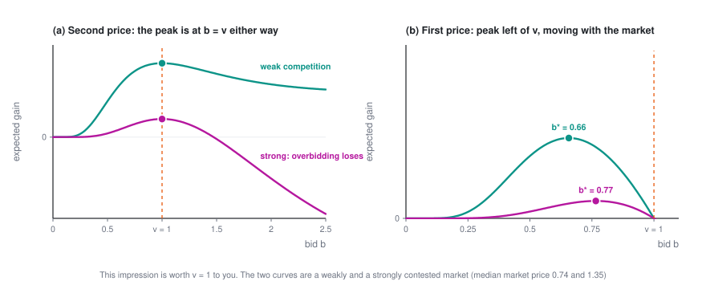

单次拍卖的出价
一场拍卖里，你只需要报一个数。对你来说，所有竞争对手加起来只是一个随机的「市场价」：由它推出胜率和花费，就能看清为什么二价下该如实报价、一价下要压价。顺带从平台一侧看一眼——底价其实就是一个定价问题。
出价专题 · 第 1 篇 / 共 3 篇 · 阅读约 8 分钟
← 已是第一篇 · 专题目录 · 预算约束下的出价 →
这是「广告出价入门」的第一篇，只看一次拍卖、一个出价，不需要任何前置知识。
本篇会用到的符号
| 符号 | 含义 |
|---|---|
| b | 你的出价，决策变量 |
| z | 市场价：其他所有竞争者里的最高出价，对你来说是个随机数 |
| w(b) | 胜率曲线 P(z \le b)，也就是 z 的分布函数 |
| w'(b) | 胜率曲线的斜率，也就是 z 的概率密度 |
| c(b) | 这次机会的期望花费（输了算 0），c_1 是一价，c_2 是二价 |
| v | 这次曝光对你值多少 |
| r | 平台设的底价 |
完整符号表见专题目录。
1. 把问题写下来
用户刷一次信息流，就产生一次广告曝光机会，平台为它办一场拍卖。你是某个广告主的出价代理，这一次只做一件事：报一个价 b。
对你来说，其他所有竞争者加在一起，只体现为一个数：他们之中的最高出价 z，下文叫市场价。你事先不知道 z，但可以从历史日志里估计它的分布。于是赢的概率就是
这条曲线叫胜率曲线（业内也叫 bid landscape）。它就是市场价的分布函数：从 0 出发，单调上升，趋向 1。它的斜率 w'(b) 就是市场价的概率密度。
赢了之后付多少，取决于平台的计费规则：
- 一价（first price）：付自己的出价 b。
- 二价（second price）：付「刚好能赢的价格」，也就是市场价 z。
对这一次机会取期望（输了花 0），两种规则下的期望花费分别是
二价的式子读作：把所有你能赢下的市场价 z \le b，按出现的概率加权求和。
关于单位。 广告平台一般按 eCPM（每千次曝光的期望收入）排序。你按点击出价 b_{\text{click}} 元，折算到每次曝光就是 b = b_{\text{click}} \times \text{pCTR}。本专题的 b、z、v 一律换算到「每次曝光」上。单广告位的 GSP 按点击计费时，赢家每次点击付 z/\text{pCTR}，折回每次曝光正好是 z，所以它就是二价。
2. 关键事实：二价下，多赢一次的成本正好是你的出价
「每赢一次花多少」有两种算法：
- 平均成本：c_2(b)/w(b) = E[z \mid z \le b]，即赢下的那些拍卖的平均成交价。它一定小于 b。
- 边际成本：出价从 b 抬到 b + db，多花的钱除以多赢的次数。
边际成本的结果非常简洁。对 c_2 的积分上限求导，c_2'(b) = b\,w'(b)，于是
直觉：出价抬高一点点，多赢下的恰好是市场价落在 [b,\ b+db] 里的那些拍卖，每一场都付 b 左右。
一价就不一样了：
多出来的 w/w'，是因为一价下抬价不只多赢了新的拍卖，还让本来就能赢的每一场都多付了钱。二价没有这一项，因为你付的是 z，不是 b。

用均匀分布算一个简单的例子：若 z 在 [0, m] 上均匀，则 w = b/m，c_2 = b^2/(2m)。二价的平均成本恰好是出价的一半，边际成本等于出价；一价的边际成本则是 2b。
3. 这一次该出多少
这次曝光对你值 v（比如 v = \text{pCTR} \times 一次点击对你值多少钱）。赢了拿到价值、同时付钱，期望收益是
二价。 求导：
w'(b) \ge 0，所以 b < v 时导数不为负，b > v 时导数不为正：
这个结论不依赖 w 的任何性质。竞争强也好弱也好，分布是单峰、双峰还是别的形状，二价下如实报价都是最优的。
一价。 令导数为零：
一价要压价（bid shading），压多少取决于 w，也就是说你必须先估计市场。均匀分布下 b_1^\star = v/2。

读法：二价把「估计市场」和「决定出价」彻底拆开了，一价没有。 这是二价在工程上好用的根本原因。现实里两种都有：LinkedIn 的公开论文提到，它自己的信息流广告位用带底价的 GSP，而站外合作媒体的流量大多是一价。
如果你读过定价专题：一价的 b^\star = v - w/w' 和定价的 p^\star = c + q/(-q') 是同一个结构的两面。卖方在成本上加价，买方在价值上压价，幅度都是「当前的量 ÷ 量对价格的敏感度」。
4. 从平台看：底价就是一个定价问题
平台可以设一个底价 r（reserve price）：低于 r 的出价不算数，赢家至少付 r。
最简单的情形：只有一个出价者，二价下他报的就是自己的价值 X，X 的分布函数是 F、密度是 f。平台的期望收入是
这正是定价专题第一篇的原题：价格是 r，成交概率 q(r) = 1 - F(r)，成本为 0。套用那里的结论：
价值在 [0, 1] 上均匀时，r^\star = 1/2。
一个经典结论（Myerson，1981）：各出价者的价值独立同分布、且分布满足一个叫「正则」的温和条件时（均匀分布就满足），最优底价跟有几个出价者无关，还是上面这个 r^\star。
站回出价者这边，底价只是改了一下市场价：把 z 换成 \max(z,\ r)，前面所有公式照用。
5. 落地时会踩的坑
- 胜率曲线要从日志里估，而日志是删失的。 二价下赢了才看到 z，输了只知道 z > b。直接拿成交价画直方图，看到的全是比你出价低的市场价，会系统性低估竞争。这是标准的删失数据问题，可以借用生存分析的工具。一价更麻烦，赢了通常也看不到 z，只知道 z \le b。
- v 估不准，出价就跟着偏。 二价下 b = v，pCTR 高估多少，出价就高多少；而且你赢下的恰恰是被高估的那一批（赢家诅咒）。所以对出价来说，预估值的校准和排序能力（AUC）同样要紧。
- 多个广告位的 GSP 里，如实报价不再是最优。 本篇结论只对单个广告位严格成立，多广告位的情况见 Edelman、Ostrovsky、Schwarz（2007）。
出价专题 · 第 1 篇 / 共 3 篇
← 已是第一篇 · 专题目录 · 预算约束下的出价 →
Bidding in a Single Auction
In an auction, all you do is name one number. To you, all your competitors combined are just one random "market price": from it you can work out your win rate and your spend, and see why you bid your true value under second price but shade your bid under first price. We'll also take the platform's side for a moment — setting a reserve price turns out to be a pricing problem.
Ad Bidding · Part 1 of 3 · 8 min read
← First part · Series index · Bidding Under a Budget →
This is the first post in A Primer on Ad Bidding. It looks at a single auction and a single bid, and needs no background.
Symbols used in this post
| Symbol | Meaning |
|---|---|
| b | Your bid, the decision variable |
| z | Market price: the highest bid among all the other bidders, a random number from your point of view |
| w(b) | Win-rate curve P(z \le b), i.e. the distribution function of z |
| w'(b) | Slope of the win-rate curve, i.e. the probability density of z |
| c(b) | Expected spend on this opportunity (zero if you lose); c_1 for first price, c_2 for second price |
| v | What this impression is worth to you |
| r | The reserve price set by the platform |
The full notation table is in the series index.
1. Setting up the problem
Each time a user scrolls their feed, an ad impression opportunity comes up, and the platform runs an auction for it. You're the bidding agent for an advertiser, and in this auction your only job is to name a price b.
To you, all the other bidders combined boil down to a single number: the highest bid among them, z, which we'll call the market price. You don't know z in advance, but you can estimate its distribution from historical logs. The probability of winning is then
This is the win-rate curve (in the industry, also called the bid landscape). It's simply the distribution function of the market price: it starts at 0, rises monotonically, and approaches 1. Its slope w'(b) is the probability density of the market price.
What you pay when you win depends on the platform's pricing rule:
- First price: you pay your own bid b.
- Second price: you pay "just enough to win", which is the market price z.
Taking the expectation over this one opportunity (you spend nothing if you lose), the expected spend under the two rules is
Read the second-price formula as: take every market price you'd beat, z \le b, and add them up, each weighted by how likely it is.
A note on units. Ad platforms usually rank ads by eCPM (expected revenue per thousand impressions). If you bid b_{\text{click}} per click, that works out to b = b_{\text{click}} \times \text{pCTR} per impression. Throughout this series, b, z and v are all converted to per-impression amounts. In a single-slot GSP auction charged per click, the winner pays z/\text{pCTR} per click, which is exactly z per impression — so it's a second-price auction.
2. The key fact: under second price, one more win costs exactly your bid
There are two ways to measure "cost per win":
- Average cost: c_2(b)/w(b) = E[z \mid z \le b], the average price of the auctions you win. It's always less than b.
- Marginal cost: raise your bid from b to b + db, then divide the extra spend by the extra wins.
The marginal cost comes out remarkably simple. Differentiating c_2 with respect to its upper limit gives c_2'(b) = b\,w'(b), so
The intuition: nudge your bid up a little, and the extra auctions you win are exactly the ones whose market price falls in [b,\ b+db] — each of which costs you about b.
First price is a different story:
The extra w/w' is there because under first price, raising your bid doesn't just win new auctions — you also pay more in every auction you would have won anyway. Second price has no such term, because you pay z, not b.

A quick example with a uniform distribution: if z is uniform on [0, m], then w = b/m and c_2 = b^2/(2m). Under second price, the average cost is exactly half your bid and the marginal cost equals your bid; under first price, the marginal cost is 2b.
3. How much to bid this time
This impression is worth v to you (for example, v = \text{pCTR} \times what a click is worth to you). When you win, you get the value and pay the price, so your expected gain is
Second price. Differentiate:
Since w'(b) \ge 0, the derivative is non-negative for b < v and non-positive for b > v:
This result doesn't depend on any property of w. Strong competition or weak, a distribution with one peak, two peaks or any other shape — under second price, bidding your true value is always optimal.
First price. Set the derivative to zero:
Under first price you shade your bid, and how much depends on w — you have to estimate the market first. With a uniform distribution, b_1^\star = v/2.

The takeaway: second price completely separates "estimating the market" from "deciding the bid"; first price doesn't. That's the fundamental reason second price is so convenient in engineering practice. Both formats are widely used: LinkedIn's published paper mentions that its own feed ads run GSP with a reserve price, while most of its off-site publisher inventory is sold through first-price auctions.
If you've read the pricing series: the first-price b^\star = v - w/w' and the pricing formula p^\star = c + q/(-q') are two sides of the same structure. The seller marks up from cost, the buyer shades down from value, and in both cases the size of the adjustment is "current volume ÷ how sensitive volume is to price".
4. The platform's view: a reserve price is a pricing problem
The platform can set a reserve price r: bids below r don't count, and the winner pays at least r.
Take the simplest case: there's only one bidder, who under second price simply bids their value X, where X has distribution function F and density f. The platform's expected revenue is
This is exactly the problem from Part 1 of the pricing series: the price is r, the purchase probability is q(r) = 1 - F(r), and the cost is 0. Applying the result from there:
If values are uniform on [0, 1], then r^\star = 1/2.
A classic result (Myerson, 1981): when bidders' values are independent and identically distributed, and the distribution satisfies a mild condition called "regularity" (the uniform distribution does), the optimal reserve price doesn't depend on how many bidders there are — it's still the r^\star above.
Back on the bidder's side, a reserve price just changes the market price: replace z with \max(z,\ r) and every formula above still applies.
5. Pitfalls in practice
- You have to estimate the win-rate curve from logs, and the logs are censored. Under second price you only see z when you win; when you lose, you only know that z > b. Plot a histogram of clearing prices directly and every price in it is below your own bid, so you'll systematically underestimate the competition. It's a standard censored-data problem, and the tools of survival analysis apply. First price is even harder: you usually don't see z even when you win — only that z \le b.
- If v is off, your bid is off. Under second price b = v, so overpredicting pCTR by some percentage means overbidding by the same percentage; worse, the auctions you win are precisely the ones where you overpredicted (the winner's curse). For bidding, calibration of your predictions matters just as much as ranking quality (AUC).
- With multiple ad slots, bidding your true value in GSP is no longer optimal. The results in this post hold strictly for a single slot; for the multi-slot case, see Edelman, Ostrovsky and Schwarz (2007).
Ad Bidding · Part 1 of 3
← First part · Series index · Bidding Under a Budget →